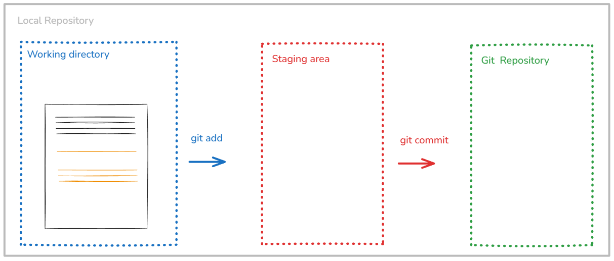
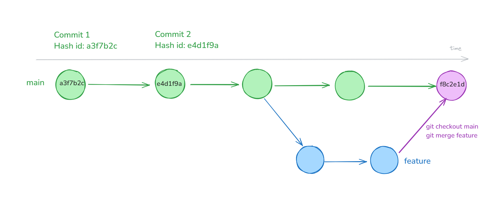
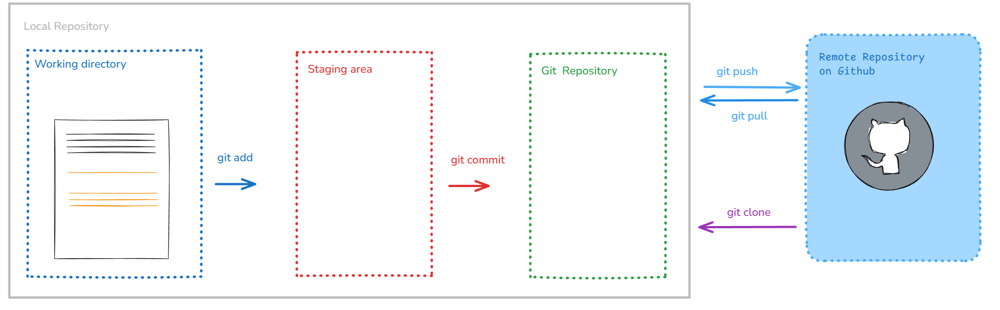
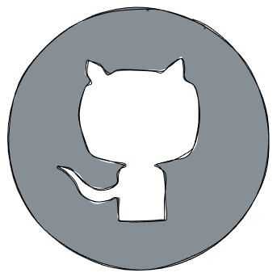
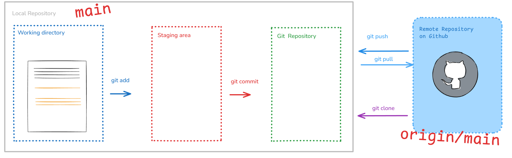
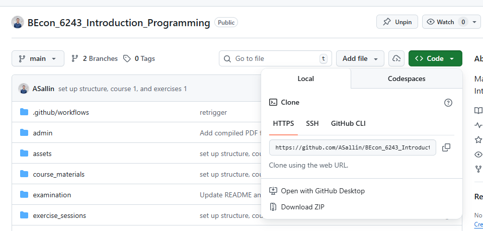

6,222 Introduction to Programming
Lecture 3: Git and GitHub for collaboration
Goals for today
In this lecture and exercise session, we will:
- go remote with our repository
- set up a collaborative project on git
Short Recap
Git is a Version Control System

Basic workflow: git init → git add → git commit
Key concepts: Working directory → Staging area → Repository
Use .gitignore to exclude files you don’t want to track.
Recap: Branches and merging

Branches let you work on features without breaking main code.
git branch feature → git checkout feature → make changes → git commit
Merging brings changes from one branch into another.
git checkout main → git merge feature
Merge conflicts happen when changes overlap. Resolve manually, then commit.
Remotes 🌐️
Communicate and collaborate via remotes

- To collaborate with others we need a remote
- GitHub is the de facto standard with a big community
Remotes 🌐️
- A remote is a version of your repository stored on a website like GitHub.
What is GitHub?
- GitHub is a website to host git repositories
- By having your git repository online, you can easily collaborate with others
- There are alternative hosts like Bitbucket or GitLab
Why having your code on GitHub?

- Backup of your project (you can work from different machines)
- Collaboration in groups and also with people you don’t know
- Free and Open-Source Software (FOSS)
- Visibility as a Programmer (your porfolio - GitHub fulfills some function of a social network for programmers)
Github.com: a demo
Check some interesting GitHub repositories: PaddleOCR, an open-source optical character recognition, or Awesome Datascience, a full collection of resources on data science
Or GitHub pages, like the GitHub profile of the World Bank or build your own page with “build-your-own” projects.
Working with remotes
Four basic commands to work with remotes

git clone/git remotegit pull/git push- The main remote is usually called
origin. - Remotes also have branches, just like your local repository.
Adding a remote from an existing repository
When you want to add an existing repository to GitHub, you will have to add the remote yourself
git remote add <remote name> <remote URL>It only works if you are not in a repo which has already been linked to a remote.
git remote add origin git@github.com:asallin/BECON_4222_Introduction_Programming.gitTo learn about all possible commands for remotes use -h
git remote -hCloning a repository
- You can download repositories from GitHub (and anywhere else), by cloning them
- For public repositories,
git clonejust works, for private ones you will need to be authenticated - If you use
git clone, the remote namedoriginis set up for you automatically. git clone <remote URL>
Syncing Changes: overview
You first pull the latest changes from the remote and then push your own changes.
Getting Changes: git pull
- To get the newest updates from GitHub, type
git pullin your terminal. - This command downloads any changes from the online repository and adds them to your current work.
- Usually, your branch is already set up to follow the matching branch on GitHub.
- If it isn’t, Git will show you a warning and tell you what to do.
# Pull from the tracked remote branch
git pull
# Pull from a specific branch
git pull <remote> <branch>Getting Changes: git pull
git pulldoes does things under the hood: it fetches the latest changes and merges them into the current branch.- (You can also run
git fetchto fetch the latest changes and thengit merge <remote>/branchto merge them) - When you run
git pullfor the first time, you will need to choose a default merge strategy - When you receive the message, just copy this line of code (or the one you prefer)
# Default to merge
git config pull.rebase falsePushing Your Changes: git push
- You can send your changes to github by running
git push - This only works if there are no new changes at the remote
- If there have been changes since your last
pullyou need topullagain
- If there have been changes since your last
# Push to the tracked remote branch
git push
# Push a branch to the remote for the first time
# -u is short for --set-upstream
git push -u <remote> <branch>Connecting git and github
Authenticating with GitHub 🗝️
… some patience is required there…
Authenticating with GitHub 🗝️
Authentication when pushing and pulling
- When you connect to a GitHub repository, GitHub needs to verify who you are using a username and password. Since August 2021 stronger authentication is required, and there are several secure methods available.
- We’ll use SSH keys: you keep a private key on your computer and upload the matching public key to GitHub; when they match correctly, GitHub grants access.
- Using SSH keys is more secure than passwords, avoids repeated credential prompts, and is a common, portable method for authenticating to remote services.
How to?
- Setting up the authentication with GitHub could be somewhat cumbersome.
- Please go to this website from LMU Munich and follow the steps to authenticate with GitHub.
Credits: Open Science Center at LMU Munich (Mike Croucher & Malika Ihle)
Test your connection
Test your connection using the following code.
ssh -T git@github.com
> Hi ASallin! You've successfully authenticated, but GitHub does not provide shell access.Cloning a repository
Cloning the course repository
Cloning the course repository
2. Find the HTTPS or SSH on the GitHub course repo
Go on https://github.com/ASallin/BECON_4222_Introduction_Programming and click on <>Code

Cloning the course repository
3. Clone the course repository.
The course is public, so cloning via HTTPS will work without a SSH key. However, cloning via the SSH URL requires a configured SSH key.
git clone https://github.com/ASallin/BECON_4222_Introduction_Programming.gitor
git clone git@github.com:ASallin/BECON_4222_Introduction_Programming.gitCloning the course repository
Now you’ve cloned the course repository in your directory. You’ll have a new folder called BECON_4222_Introduction_Programming. You can remove the materials folder.
Introduction_to_programming/
├── github_course_materials/ # is empty for now, you will clone the git repo in week 3
├── exercises/ # Student's own work
│ ├── week_01/
│ ├── week_02/
│ ├── ...
│ ├── week_12/
├── group_project/
│ ├── ...Every week, you can refresh the course content with git pull.
Create a repo
Creating a GitHub repository
On your GitHub account, click New repository
- Choose a name (e.g.,
my-project) - Set visibility: Public (anyone can see) or Private (only you and collaborators)
- Check Add a README file
The README.md
- First thing visitors see when they open your repo
- Written in Markdown (you know Markdown already from Data Handling, same as Quarto)
- Should describe: what the project is, how to install/run it, how to contribute
- A good README makes your project accessible and professional
Clone it and start working
git clone git@github.com:yourusername/my-project.gitPull Requests
A pull request (PR) is a request to merge changes from one branch into another.
Why?
- You don’t push directly to
main— you work on a branch, then ask for your changes to be reviewed and merged - PRs are the standard way to collaborate on GitHub
Workflow
- Create a branch and make your changes
- Push the branch to GitHub:
git push -u origin my-branch - On GitHub, open a Pull Request from
my-branch→main - Collaborators review, comment, request changes
- Once approved, merge the PR
PRs keep the main branch clean and give the team a chance to review code before it’s integrated.
Collaborators
Sources
https://smonsays.github.io/git-workshop/#/iv.-collaboration
Jan Simon